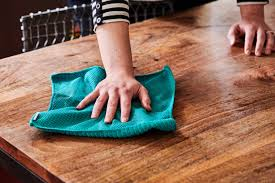
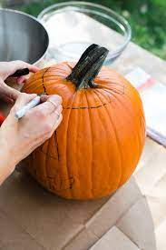
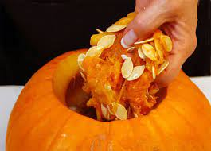
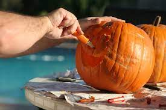

Carving Pumpkins For Noob By A Noob
Hi, me fellow noob. Today, we are going carving pumpkins. I do not know how to carve a pumpkin, soI will share with you my best guess. Let's get started now.
I'm guessing what you'll need the following items:
- A knife
- A spoon
- A writing tools
- A pumpkin
-
Find a place where it's easy to clean up big messes.
-
I'm pretty sure now we have to remove the guts of the pumpkin. You will have to cut around the stem of the pumpkin using a knife. To get access to the guts.
-
Grab your spoon or just use your hands and start removing the guts of the pumpkin. Dispose of the guts how you would like.
-
After removing all the guts from the pumpkin. Put the top of the pumpkin back on. so now let's grab a marker to start drawing a design on the pumpkin front. Put anything on the pumpkin you want, it's your pumpkin after all.
-
I'm pretty sure what the last step is now is to use a knife to cut out the design that you just drew on it and stick a candle in and after.

clean off an area

cut the top of a pumpkin off

remove the guts of the pumpkin now
draw your design on the front of the pumpkin

cut your design out now
You just made it to the end of the tutorial. I'm so proud of you. We just got better at something. so I guess we're not a noob anymore at carving pumpkins or maybe we just failed and scroll to the end of the website but anyways you gave an attempt that's better than nothing. Please share this with your friends and family and all social media.It would be much appreciated and don't let your pumpkins on the steps for too long or they may just turn green. have a very good night
Brett signing off